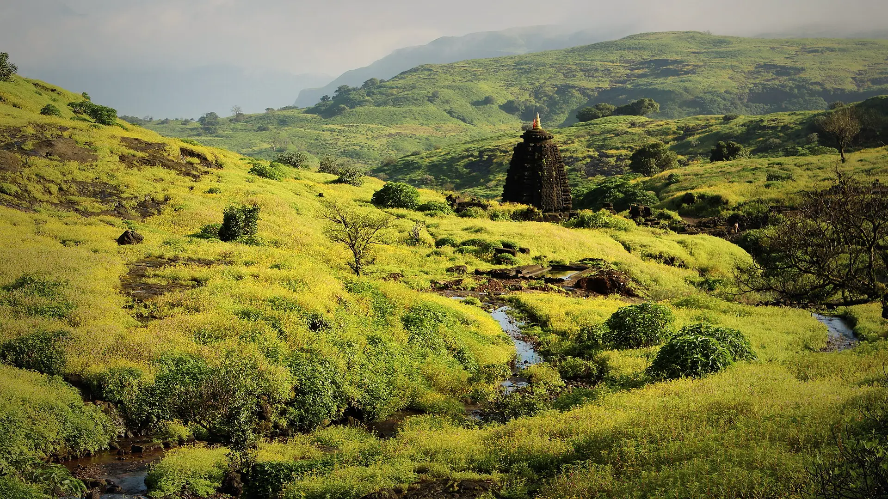

01Day 1 · Pachnaikm 0.1
Up to the plateau
~5hFrom Kasara · By road
A five-hour drive from Kasara reaches Pachnai by lunch. The walk starts at about 2 pm.

Photo: Tokendra, CC BY-SA 4.0हरिश्चंद्रगड · Ahilyanagar, Western Ghats
The trek in one line, and what you can do with it.
A hill fort above the Konkan, with caves, a temple and one of the great cliffs of the Sahyadri.
5 stops on the map, then the climb. Scroll the stops and the map follows.
01Day 1 · Pachnaikm 0.1
~5hFrom Kasara · By road
A five-hour drive from Kasara reaches Pachnai by lunch. The walk starts at about 2 pm.
01Day 1 · The templekm 2.8
1.5mCave linga · In waist-deep water
On the plateau stands the temple of Harishchandreshwar, with a small pool beside it.
01Day 1 · Kokankadakm 4.0
5pmCamp by · On the cliff top
Camp is at Kokankada, a huge west-facing cliff that overhangs the Konkan far below.
02Day 2 · Taramati · 1,422 mkm 5.5
~2hFrom camp · Easy, from 7:30 am
An easy morning hike to Taramati, at 1,422 m the highest point of the fort.
02Day 2 · Pachnaikm 9.1
12pmLeave the fort · After the caves
Past the temple and caves once more, then down to Pachnai by about 2 pm and the drive back to Kasara.
Best in Jul–Sep.
Dark: the months the trek’s sources call its best. Mid: possible. See all treks in July.
Base prices from 4 operators’ own pages, per person. GST and travel are often extra. Treqz sells nothing.
₹999–2,500
The practical things, then the questions people ask.
From the Kalyan side, the last ATMs are in Murbad. Carry about ₹1,500–2,000 in cash.
Treks and TrailsSignal is good along the highway but weak at the base village. It comes back on the fort and on Taramati.
Treks and TrailsThere are small eating places at the base. Stalls on the trail sell snacks, tea and bottled water.
Treks and TrailsThere are no washrooms at the Kokankada campsite. They are only in the base village.
Treks and TrailsSnakes and scorpions live on the plateau, so sleep inside a tent. The campsite can be crowded.
Treks and TrailsNo permit is needed. The fort is inside the Kalsubai Harishchandragad Wildlife Sanctuary, and the forest office sometimes sets a fee and timings.
Treks and TrailsAbout 9.2 km of walking over 2 days on the trail.
The highest point is 1,422 m, about 520 m above the start.
Its sources grade it Easy.
Jul–Sep. It is also possible in Oct–Jun.
₹999 to ₹2,500 per person: base prices from 4 operators' own pages. GST and travel are often extra.
Signal is good along the highway but weak at the base village. It comes back on the fort and on Taramati.
No permit is needed. The fort is inside the Kalsubai Harishchandragad Wildlife Sanctuary, and the forest office sometimes sets a fee and timings.
From the Kalyan side, the last ATMs are in Murbad. Carry about ₹1,500–2,000 in cash.
Full-sleeve top, Full track pants, Sun cap, Trekking shoes, Good torch and spare battery, Day backpack, 20–30 L, Water, 2–3 litres, Identity proof. The full list is on the 3D page.
It is possible: its sources list Dec–Feb as workable, with snow and cold to plan for.
Its sources grade it Easy and it takes 2 days on the trail, with a highest point of 1,422 m.
Sandhan Valley, Kalsubai, Rajmachi, Rajgad to Torna, Kudremukh.


Treks in July · Treks in August · Treks in September · Treks in the Western Ghats · Beginner Treks in the Western Ghats · Monsoon Treks in India · Easy Treks in India for Beginners · Weekend Treks in India (1–2 Days) · 2 Day Treks in India · Harishchandragad vs Kalsubai · Harishchandragad vs Sandhan Valley · Harishchandragad vs Rajmachi · Harishchandragad vs Rajgad to Torna · Free trek finder · All treks in 3D